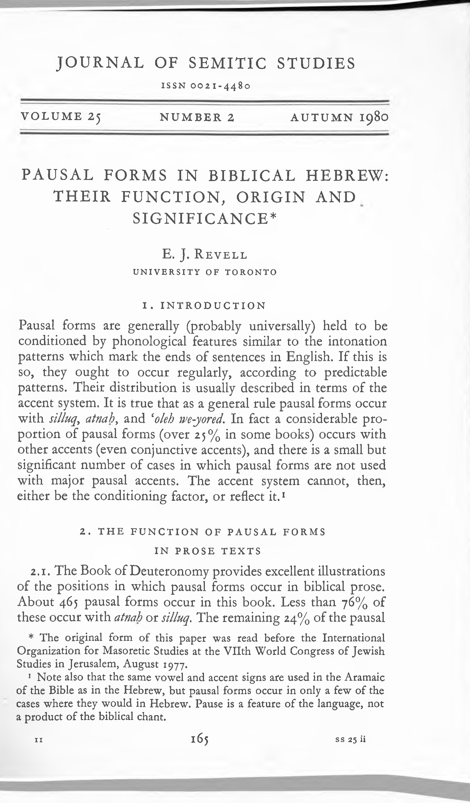

07a.19 Pausal Forms in Biblical Hebrew their function origin and significance part6
Bit(!?
ESTUDIOS MASORETICOS
(V Congreso de la IOMS)
Dedicados a HARRY Μ. ORLINSKY
Editados por Emilia Fernandez Tejero
TEXTOS Y ESTUDIOS «CARDENAL CISNEROS» DE LA BIBLIA POLIGLOTA MATRITENSE INSTITUTO «ARIAS MONTANO» C.S.LC. MADRID, 1983
NESIGk AND THE HISTORY OF THE MASORAH
Department of Near Eastern Studies ־ University of Toronto
E. J. REVELL
N&dZga is a phonological change, which, like that occuring in
pausal forms, is without meaning, as meaning is traditionally under-
stood. Both types of change are traditionally described as dependent
on (that is conditioned by) the accent system, but the conditions
under which they occur can only be described, in terms of the accent
system, in a very inexact way. The use of qamU on conjunctive Mau) is
a phenomenon which is similar in its lack of obvious meaning. It is
not held to be conditioned by the accent system, but sometimes con-
flicts with it. I have shown in recent studies that the occurence
ן
both of this phenomenon and of pausal forms was conditioned by a
form of reading tradition in which some passages were read in a way
somewhat different from that indicated by the received accentuation.
In many cases, the differences shown reflect conventions used in
other passages in which accentuation and pausal forms do reflect the
same way of reading. Examples are:
Dt
5:14
הכאלמ־לכ
השעת
אל
...
התמהב־לכו
■הרמהו
^רושו
התמא?־הרבעו
התבו־־הנבו
התא
The pausal forms, which occur with a conjunctive and minor dis-
junctives, arose in a tradition in which each group of items in the
list was read as a separate unit, as in the case in the list in
E.J. REVELL
Lev 14:54-56.
Ps
10:15
...
ועשר־־שורדת
עשר ער}
עורז
רבש
· · /
.*
“ ’ *A · ־
*
:א
The accentuation assigns these nouns to different clauses, but
the
on conjunctive reflects a form of tradition in which
they were treated as a unit, as is usually the case where two nouns
are joined by this form of the conjunction, and as was true for
Jerome and the Greek translation.
These cases in which vowel patterns and accentuation do not cor-
respond thus reflect minor variations in the reading traditions. The
inconsistency arises from the conflation of two different forms of
tradition each of which was presumably once in use in some community.
An interesting example of such conflation involving a lexical variant
is discussed by Mordecai Breuer .
2
1 sam 10:19 a, l.
־ונילע a” ’
םישת
חלמ־יכ Vv ’
ול
·ורמאת ! : J
A and L, reading ול, show YtU^QCL on ורמאתו following the pattern
regularly shown in such introductions to speech, as Gen 26:32 etc.
S1 reads
א^
·ורמאת
K
is not shown, as is normal where a verb of
speaking introduces a one-word speech, as in Gen 19:2, 1 Sam 8:19
2 ;
אל
·ורמאיו
Kgs 9:12
0רק
·ורמאיו .
In C, the two forms of tradition are conflated, so that the text
of one is used with the accentuation of the other
:
. j : ול
-ורמאתו
,. Breuer
suggests that this represents a conventional mechanism for dealing
with such variants within the tradition, like qeAe/keXtV. This seems
doubtful, as no Masoretic notes record it, but that is of no import-
ance here. The point to be made is that C clearly reflects a confla-
tion of traditions of exactly the same type as do the examples given
above. Another important point made by Breuer is that where a change
in one feature of the tradition was brought about by such conflation,
other features were not changed to conform with it. Thus in Dt 5:14,
pausal forms are not replaced by contextual forms where the word re
- 38 -
NESI GA AND THE HISTORY OF THE MASORAH
ceives a conjunctive accent, and in Ps 10:15, the conjunction does
not receive Ahewa where the close association of the two nouns,
which gave rise to the qamU r is abandoned.
The existence of various strands of tradition showing minor dif-
ferences, and the fact that the standard tradition sometimes pre-
serves conflicting features originating in two different strands,
is essential background for the understanding of nU^Lga, This phe-
nomenon is of particular interest for the history of the Masorah
because of the information it provides on the extent to which such
variation occurred in the antecedents of the standard Tiberian tra-
dition, and on the period when they arose. The following survey is
based on a comprehensive study of
recently completed, and
soon to be published. It will first provide a general description
of how nUstgCi is conditioned, and then deal with the two areas of
particular interest.
It is important to note that
is a stable feature of the
Tiberian tradition. Among all cases checked (some 600, including
all unusual cases) L differs from A (where extant) only in Ez 23:40
ידע
תידעו
*1v 7~:
in which L conflicts with all other sources, and is cer-
tainly in error. In fact there is considerably more variation be-
tween these two MSS in the use of vowel letters in the cases studied
than in the marking of stress position. The situation is the same
in other superior Tiberian MSS, but even in the Codex Babylonicus
Petropolitanus, where the accentuation, although Tiberian, is non-
standard (as is shown by the
of zaqe^) there is variation in
only about 20% of the cases.
As is well known, n^ZgCi occurs in the first of two words joined
by a conjunction, where the second word has initial stress, and the
first ends in two open syllables (-CVCV), two open syllables separ-
ated by vocal 4/lCWa (-CVCaCV) , or an open syllable followed by a
closed one of which the vowel is pa£ahr AZgoZ, or 4CAC (-CVCVC) .
- 39 -
E.J. REVELL
Under these conditions (the typical situation) stress may be moved
back to the penultimate open syllable. Examples of nUZgCL in this
typical situation are:
1:5 Gen
Gen
םחל 3:19
לכאה
א9ךי
ארק הליל יכי־ י׳־^
ךשחלו ··v: העזב
Gen
שיא 49:6
·וגרה
יכ אב9וכ
The few cases where
appears to occur under other condi-
tions are described below. It was observed by Praetorius that nc־
4Zg<X occurs much more commonly in construct nouns and in verb
forms than elsewhere . This is a facet of the significance of FlC־
3
for the history of the language/ which cannot be explored
here. Because of this factor, however, the following remarks are
confined to
in construct nouns and in verb forms.
One other feature which affects the occurrence of nezZga has
not been pointed out before. Ne^Zga occurs most commonly at the
end of a clause, as is shown by the following figures:
Nu^ga occurs
at clause end
within a clause
in a construct noun in 193 of 198 cases (97%) 118 of 155 cases (76%)
in a verb form in
440 of 499 cases (88%) 331 of 517 cases (64%)
N^SZga does not occur if the second word of the pair is closely
joined to what follows -e.g. if it is construct. This creates a
strong presumption that YiU^gcL occurs at the end of a unit -in this
case a spoken unit- one of the units into which the text was di-
vided when read publicly. Such units have a syntactical basis, as
is shown by the fact that aezZga occurs regularly only in certain
syntactical structures, and is confined to the ends of syntactic
units. As with the accentuation, however, other factors, such as
semantic relationship and linguistic rhythm, are involved, so that
neither the accentuation, no/ the occurence of ne^Zga, can be cor-
related exactly wita syntactic structure.
The effect of semantic relationship on the occurrence of nUZga
- 40 -
NESI GA AND THE HISTORY OF THE MASORAH
is seen in 33 cases in which nc^Zga does not occur at the end of a
short clause which is closely related semantically to what follows.
This close relationship can be defined objectively as existing where
the two clauses represent events which are identical, sequential, or
otherwise interdependent, and where the subject of the first is rep-
resented by a pronoun (usually also acting as the subject) in the ; jer 23:4 ·ואריי־אלו ·והגרהאו
second4, as 2 sam 4:10
הזחאו
גלקצב
5ו
·ומחי־אלו
ע־־"
דוע.
s :
It is clearly reasonable to assume that in these 33 clauses -over
half the cases in which FlC4Zga fails to occur at the end of a clause-
the first clause was joined in speech to what followed, so that for
this reason MC6Zga did not occur at the end of it. The accents some-
times mark such joining, and sometimes do not, reflecting the fact
that
and accentuation arose in slightly different forms of
the tradition, which have been conflated, as described above.
The effect of linguistic rhythm on the occurrence of nU^gd is
seen in 21 cases in which jae^Zga does not occur before a major pausal
accent:
or atnah t as in Nu 5:7
5
1·
םשא ול
רשאל " ” V י" /
1
ןתנו
; Jer 11:19
דוע
רכזי~אל
ומשו .
always stands immediately or shortly before
and aZytdii. This is a musical requirement. For this reason,
does not always correlate with syntactic structure, but can
separate words joined by the closest syntactic ties. The first word
of a two-word construct phrase, or a verb followed by a preposition
with pronominal suffix, regularly has a conjunctive accent. In the
few cases in which it has a disjunctive, the disjunctive is almost
always ZZ^/jA. Thus, often, where a structure must be divided by
ZZ^/ia on musical grounds, a division is either not expected on syn-
tactic grounds, or could equally well be placed in either of two
positions. In such situations the placing of ZZ^iia often differs in different MSS, as is shown in the variants recorded by Ginsburg^,
for example Gen 2:6 L ?
ראה־־ןמ
דאו הלעי
; Gen 2:6 Ginsburg’s appar-
־ 41 -
E.J. REVELL
atus
הלעי
דאו .
Cases where expected
does not occur before AMdiq or at-
Vldh. (less than 10% of the total) arose in a form of tradition in
which the pause required before the end of a major unit was placed
immediately before the last word in it, rather than further back,
where
occurs in the received accentuation. This is confirmed
by one case in the standard Tiberian tradition in which the reverse
of this phenomenon occurred. When vowel patterns and stress posi-
tion were fixed, there was no pause between the last two words in
the unit, but
is now marked by the received accentuation.
Consequently
occurs in Nu 23:23
לא
לעפ־המ
, the only case in
which Vl^Lgd occurs in a word with a disjunctive.
Apart from these two groups, there are only nine cases in which
fails to occur at the end of a clause under typical condi-
tions. In three of these, the clause is composed of a verb of
speaking followed by a one-word speech, another case in which F1C-
was routinely blocked by the fact that the two words were
separated in speech (see above). The remaining six cases appear
anomalous -a negligible level of variation.
Within clauses, it is still clear that H,C6Zga occurs at the end
of a syntactical unit, but the nature of the unit is much more dif-
ficult to define. W&6Zga occurs regularly in a construct noun fol-
lowed by an absolute noun, unless the phrase is followed by modi-
fiers. In that case, MC6Zg6l may or may not occur, dependent, pre-
sumably, on the semantic structure of the surrounding context.
Similarly, Yl^Lgd will usually occur in a verb form followed by a
subject or modifier. This is quite regular where the remaining
words in the clause are few, and form a single phrase, as Dt 4:25
תנר לצ
-
na j : W ·.· X· Av : J ‘ ״-:*
; Jud 9:39
ילעב םכש
םתישעו
לספ
ינפל
לעג
אציו .
\״״:·
"
It is much less common where the clause is completed by a single
word; presumably the whole clause was then treated as a unit, as
- 42 -
NESI GA AND THE HISTORY OF THE MASORAH
is 1:3 ·
\וש ק5וה
עדי
; Ps 142:4
חפ יל . ·ונמט י■: \ ־J ־1
is quite rare where the clause is completed by a relative-
ly large number of words, or by more than one phrase; presumably
then it was not divided after the word following the verb, as
Ex 35:3 2 ;
תבשה
םויב
םכיתבשמ
םהילגרב IV ··:
־»”“ V A‘* ” : הנחמל. .y-:—
/V-: V”:
המהבלו
רשא
ש£ לכב □־־:־׳ ” :א :
·ורעבת-אל
Kgs 3:9
J
םימ
ה^ה־אלו * :
י״י ־5 ״
In all these cases the position of divisions in the clause (and
so the occurrence of Fie^Zga) depended on the interpretation of its
syntactical structure, which determined the way it was read. That
variations in such interpretation occurred is abundantly proved by
the accent variants in collections such as Ginsburg’s. Consequen-
ly it is not surprising to find that the accents sometimes do, and
sometimes do not, mark the main division of a clause consistent with
the occurrence of nUtgd. Where they do not, it is often easy to
suggest reasons, as in Jos 5:1
לארשי~ינב · ·: ו"
ינפמ י;v « ·־
\וע חור
םב
היה־אילו . :
י־· ?י■
The accents mark רוע as the end of a phrase, and so as modifying
היה. "There was not in them any longer spirit ...", as the Targum /
...
... דוע
תראתשא
אלו
, and Jerome non
tn AptAt&xA.
The occurrence of neAtgCL shows that the clause was divided, in the
tradition reflected, after םב, so that דוע modifies the following
noun, as it does sometimes in the Bible (as Ex 11:1) , and more com-
monly in the Mishnah. "There was not in them another spirit"; i.e.
their courage did not revive. A good parallel occurs in Mishnah
Zebaium 14:8
רתיה
היה םהל דוע
אלו
, which is not interpreted as
"There was not any longer permitting" but as "There was not another
permitting" -it was not permitted again. It is possible that the
rather odd Greek translation of Jos 5:1, "They were panic-stricken,
and there was no practical sense (cppovpOLQ 0068111׳a) in them" re-
fleets this view of חור as "another spirit".
Thus it can be concluded that nUtga occurs in the first of two
closely joined words which stand at the end of a speech unit, un-
- 43 -
E.J. REVELL
der the phonological conditions described. If this is correct, ne-
4Zga is, like pausal forms and qamU on conjunctive (MIA), a condi-
tioned phonological variation. If this is true, ne4Zga should al-
ways occur under the same conditions, and never under others. Con-
sequently, the exceptions to the description of the conditions un-
der which ne6Zga occurs are of some importance. These consist main-
ly of two groups of cases in which ne6Zga occurs in syllable struc-
tures other than those described. These are (i) (MIA) consecutive
perfect forms, (ii) forms from words with a guttural as first or
second root letter. There are only four other exceptions: one in
which the word
showing nU^gct has a disjunctive accent (Nu 23:23,
see above) and
three in which it has a vowel other than paZa/1,
got or 4CAe in
a final closed syllable: 1 Kgs 17:21 בשע אנ
»; Job
V7■
22:28
v t ~ :
1 ;
Job 14:13
תישעו . יל * i/T
It seems clear that the final stressing of ia)01a) consecutive per-
feet forms is late. It developed after vowel patterns were fixed,
so that the qamZA in the first syllable of Q0Z forms is not af-
fected. This move to final stress position was blocked in pausal
situations, and also where the verb was second of a pair (so that
qamZA would appear on the conjunction if the verb had initial stress)
as in 1 Sam 29:8, cf. the 2ms pronoun in 2 Kgs 9:25. It was sim-
ilarly blocked if the verb was closely joined to a following word
stressed on its first syllable (the situation in which ne6Zga oc-
curs). Penultimate stress in iVaW consecutive perfect forms in this
last situation (in fact in all three) is not, therefore, a case of
retraction of the accent, but of its retention in what was former-
ly the standard stress position. This group consequently does not
constitute an exception to the situation in which ne6Zga takes
place.
If that is so, the only cases in which YlU^QCL occurs in a word
of unusual structure are those in which a guttural is involved.
NESI GA AND THE HISTORY OF THE MASORAH
These are: ·ויה״יו and similar forms, five cases , as Dt 10:5 ·ויה״יו ־ ״8 . םימ
and similar forms, five cases , as Ex 15:8
:j .
·ומרענ
"ומרענ
םש;
,
also Ex 4:4
וב
קזחיו
Vj------
; ex 9:23
שא
ףלהתו
; Mic 6:8
רסח
תבהאו .
--:j· :
%״V
\··
As far as I can determine, MC4Zga occurs, or fails to occur,
in forms of this sort under exactly the same conditions as it does
in the typical cases. That is, the only abnormality about these
forms is their syllable structure. Consequently it is reasonable
to argue that, when
developed, the syllable structure of
these forms was not abnormal. That is, the guttural had no con-
sonantal value, so that these forms presented structures in which
is typical: -cvcv *yZ-ya, -CVC3CV
and -cvcvc
*ya-Z£({. There is plenty of evidence for a breakdown of the sys-
tern of gutturals in Syria-Palestine from the time of the Qumran
MSS on. There is also plenty of evidence, as noted above, of incon-
sistency between vowelling and accentuation deriving from confla-
tion of features from different strands of the reading tradition.
It seems clear that in the forms considered here, HC6Zga arose in
a form of the reading tradition in which the gutturals had lost
their consonantal value, at least when followed by another conson-
ant. The vowel patterns of this form of the tradition have, how-
ever, been replaced by those of a form in which the consonantal
value of the gutturals had been retained but, when this occurred,
the old stress pattern remained.
If this reasoning is correct, these cases reflect variation
within the tradition of a type quite different from the minor sem-
antic variations -numerous though they were- which gave* rise to
inconsistency between accentuation and vowelling or stress posi-
tion. Those could have arisen as independent variations on the
periphery of a central core of tradition. The phenomenon of re-
traction of the accent to syllables originally closed by gutturals,
however, suggests that the Tiberian reading tradition was formed
- 45 -
E.J. REVELL
from at least two separate streams, one of which had lost the gut-
tural consonants in at least some positions, and one of which had
retained them. While the evidence from this is limited, there seems
no other reasonable explanation for the facts. This phenomenon has,
then, implications of major significance for the history of the stan-
9 dard Tiberian tradition .
There is no very definite evidence on the date at which vi^LgOi
arose, but two significant points can be made. Where a word ending
in a closed syllable with original short "i” stands as the first
word in a situation typical for n^^gccr nU^igCi always occurs where
the reflex of "i" is ^^goZ, but not always where the reflex is 4C־
/LC. Where vt^ZgCL is shown in forms on this sort 4cg0Z is used in
56 verb forms, as Hab 3:6 4 ;
ץרא
דדמיו
de occurs in 19 (only 25%),
as Jer 23:29
עלס
ץצפי
. However
is used in only one participle.
Is 41:7
םעפ
םלוה^הא
. While me occurs in 29 (97%) as Jud 20:2 ףלש
A V u · ·־
ברח. It is probable, then, that AZgot results from the inhibiting
of the development of original short "i" into 4 de, since if it had
resulted from the shortening, due to Fie^Zga, of an earlier 4 de, the
distribution of 4eg0Z should be more regular. In Origen’s translit-
erations, the reflex of original short "i” in a closed final stressed
syllable is ep4ZZ0H in verb forms, construct nouns, and absolute
nouns where the syllable was once doubly closed. EZa is used else-
where. This shows the same pattern as the reflex of original short
"a" in MT: pcitah. in verbs, and in most construct nouns, pdtcth, or
4eg0Z in construct or absolute nouns in which the syllable was once
doubly closed, qamOA elsewhere. The most reasonable suggestion is
that ne^Zga occurred in a word with a final closed syllable only
where the vowel was short, and hence must have occurred in syllables
with original short "i" at about the stage of the language reflected
by the trasliterations. This is why it is rare in nouns which are
not construct.
- 46 -
NESI GA AND THE HISTORY OF THE MASORAH
N&iZga developed after the reduction of penultimate short vowel
in verbs ending in two open syllables, as in Gen 49:6 (quoted above).
The very common use of MOM to mark such vowels in qccl imperfect
forms of this type in materials from Qumran suggests that these
vowels were not reduced before the turn of the era. It seems they
generally were reduced in the tradition reflected by Origen's trans
literations. This seems to justify suggesting that ngzZga arose
within the first half of the first millenium of the present era,
and perhaps about the middle of that period. This date has import-
ant implications for the time by which stable forms of reading tra
dition had developed, as well as for the extent and types of vari
ation which continued after such stabilization had developed within
the stream which gave rise to the standard Tiberian tradition. These
implications cannot, however, be explored in this paper.
- 47 -
E.J. REVELL
NOTES
See my articles in JSS 25 (1980), particularly p. 176-177, VT 31 (1981), par
ticularly p. 187-188, and HAR 5 (1981), particularly p. 82.
2
M. Breuer, LeAhonenu 45 (1980-81) 262.
3 F. Praetorius, iib&L den ddcbj^edchenden Accent im HebJidZschen, Halle a. S., 1897,
p. 35-36.
4
In a subgroup, the second clause presents an explanation of the first.
Also eo£eh we-tJO^ed, but the discussion is confined to atnah and
for
simplicity.
c .D. Ginsburg^ The OZd TeAtament ... wZt/i the Vo/lZoua Readings frcom MSS
London, 1926.
7 Dt 10:5, Jos 4:9, 1 Kgs 8:8, Is 34:12, Ez 16:8.
Q
g
Ex 15:8, Dt 33:28, Is 40:18, 50:8, Job 12:15.
The marking of hamza in Arabic evidently represents a somewhat similar situ
ation, in that it reflects a preferred pronunciation different from that reflected
by the letters of the standard spelling. See H. Fleisch, TMLit£ de phZZoZogZe A/Labe,
Beyrouth, 1961, #16h, (p. 100). There is no reason to suppose that anything more than
this occurred in Hebrew. I.e., one form of pronunciation came to be preferred, and
superceded another, which nevertheless left its mark on the writing system.
- 48 -
INDICE
E. Fernandez Tejero: Pnue.ntact6n .......................................................................................................... g
A. Dotan: In Honoan o^ Hanny Μ. Onttn^hy ...................................................................................... 13
H.Μ. Orlinsky: Opening
............................................. 17
L. Alonso Schökel: SatudoA a toé congn&ôt6taA de, ta TOUS ........................................ 19
S. Morag: MehemZa/i Attony ..............................................
21
ESTUDIOS
H.Μ. Orl insky and Μ. Weinberg: The, Ma* o nah on CP 1 Zn AmoA 2.1
........ 25
E.J. Revell: Nesiga and the, Ht^ tony 0^ the, Maàonah ...................... 37
J. Gutmann: Masorah Figurata: The, OntgtnA and Ve,vetopme,nt a
Jewish Ant Eonm ............................................................................................................. 49
A. Dotan: Vevtatton tn Gemtnatton tn the, TtbeAtan Vocattzatton ......... 53
E. Fernandez Tejero: Re,pont on Catno Codex Edttton ...................... 79
P. Riviere et Μ. Serfaty: Etude, cntttque de^ Paseq deô ttvneA
en pnoàe. à. ta tumtène, de* noavetteA throntet à an te^ chatne^ de. ta cantttatton ............................................................................................................................................... 87
Y. Yannai: Ettbha and the, Shanammtte. (II KtngA 4:8-37). A case
0^ Homoeoteteuton, on a Text Emendation by Anctent Maso net e/>? ....... 123
S. Morag: The. ye.me.ntte, Tnadttton 0^ the, Etbte,: The. Tnanéttton Pextod ...
137
L. Diez Merino: The, Tangamtc, Maôona 06 the. Vat.Ebn.448 151
N. Allony: Et Pne,6acto det ttbno "Honatat Hakone,” di Ibn Bat‘am
.................... !85
E. Fernandez Tejero y M.T. Ortega Monasterio: Loa maôonaô de. A, C y L
zn et ttbno de. Joet .............. 205
RESUMENES
243
